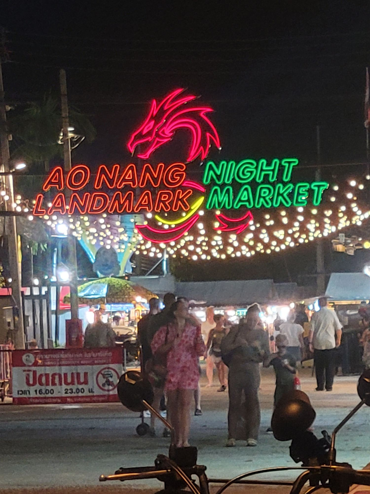

BX-04 · LageAo Nang, Krabi
Vorne der Strand, um die Ecke der Nachtmarkt
Du findest uns am Noppharat-Thara-Ende von Ao Nang: am ruhigeren Strandabschnitt, mit Longtail-Booten zu den Inseln und dem Landmark Night Market ganz in der Nähe.
Zu Fuß ab unserem Tor
| Ort | Zu Fuß |
|---|---|
| Noppharat Thara Beach | etwa 30 Schritte |
| Starbucks, Ao Nang Landmark | 180 m · 3 Min. |
| 7-Eleven (24 Stunden geöffnet) | 230 m · 3 Min. |
| KFC, Ao Nang Landmark | 240 m · 3 Min. |
| Ao Nang Landmark Night Market | 300 m · 4 Min. |
| Fähranleger, Zentrum von Ao Nang, Flughafen Krabi | folgt |
So findest du unsBX-04
8.043483, 98.809622Soi Noppharat Thara 13, Ao Nang, Krabi Adresse wird noch bestätigtIn Google Maps öffnen



Der Strand
Noppharat Thara ist der lange, ruhige Strand am westlichen Ende von Ao Nang. Longtail-Boote warten auf dem Sand, und am Horizont liegen die Kalksteininseln.
Der Nachtmarkt
Der Ao Nang Landmark Night Market ist vier Gehminuten entfernt: Streetfood, Getränke und Stände, jeden Abend.
Für den Alltag
Ein rund um die Uhr geöffneter 7-Eleven, Starbucks und KFC liegen alle höchstens drei Gehminuten entfernt.